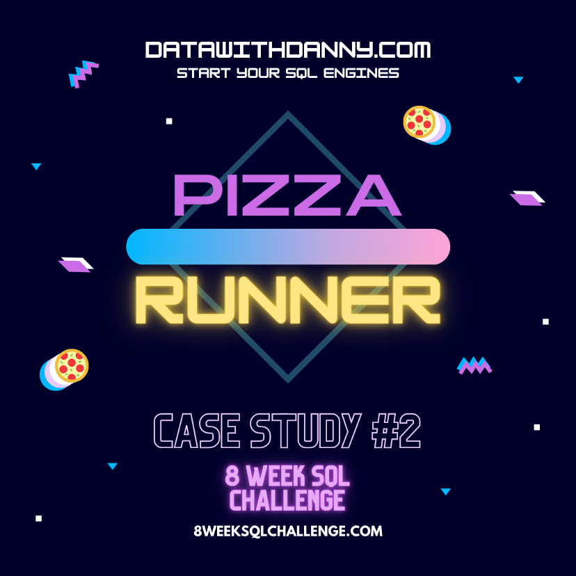

Capstone Project for the Google Data Analytics Professional Certificate. First, I used python to
have a prior understanding of the data,
and to create a unique, complete and cleaned dataset. Then, I visualized the data with a Tableau
dashboard.
For this project, I used a public kaggle dataset US Mass
Shootings
. I cleaned and transformed the data into one dataset with Python and then I created a Tableau
dashboard.
The dataset used for this project was obtained at the Data Resources Playground of Maven
Analytics
website. The dataset was already cleaned and ready to be analyzed so I just imported to Tableau
and created a dashboard.

The dataset used for this project was created by Ian Klosowicz on his dashboard
contest.
The dataset was already cleaned, but I decided to include some columns to add a broader level of
detail to the analysis using MySQL. Then I created a Tableau dashboard.

I wanted to practice SQL, so I started the #8weekschallenge created by Danny Ma.
That's the 1st challenge of the series.

Continuing the #8weekschallenge. I
split the 2nd challenge in 3 parts.
That's the 1st one, where I cleaned the dataset and answered Part A of the case study questions.
On the 2nd part of the challenge, I answer the case study questions of Part B and C.
On the 3rd and last part of the challenge, I answer the case study questions of Part D and the
Bonus Question.